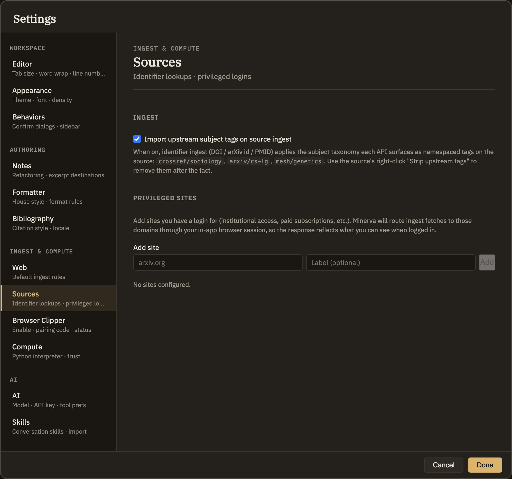

Sources
A source is a paper, article, or document you've brought into your project to read and cite. The Sources tab in Settings holds two conveniences for getting sources in: automatically picking up subject tags when you add one by its identifier, and logging in to sites so Minerva can reach articles you have access to. To learn what sources are and the different ways to add one, see Left sidebar → Sources.
Subject tags on new sources
When you add a source by its identifier — a DOI, arXiv id, or PubMed id — the catalog you're pulling it from often already knows what subject areas the work belongs to. Minerva can bring those subjects along as ready-made tags on the new source, so it's filed under the right topics automatically.
crossref/sociology, arxiv/cs-lg, or mesh/genetics. Turning it off only affects sources you add from then on; tags already on existing sources stay put. To remove these tags from a source later, right-click it and choose "Strip upstream tags."These tags only come from sources you add by identifier — adding one by web address or from a file won't produce them, since only a catalog lookup knows the work's subject areas.
Sites you're logged in to
Some articles are only fully available once you've signed in — through an institution or a paid subscription. If you list a site here and log in to it, Minerva will use that login whenever it fetches from that site, so a paywalled article comes in complete instead of blocked.
arxiv.org) and an optional name, then Add. Each site you add keeps its own separate, private login — signing in to one never affects another.Being listed here only means Minerva uses your login when it fetches from that site. It doesn't change anything else, and nothing gets brought in without your say-so.
